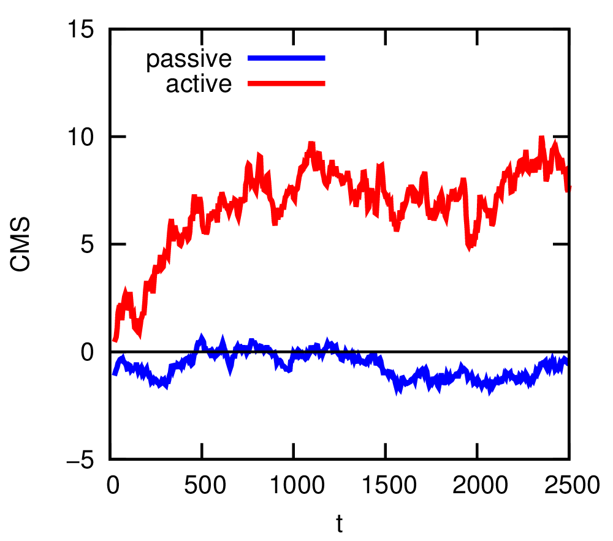

Joost de Graaf1, a) and Henri Menke1, b)
Institute for Computational Physics, Universität Stuttgart, Allmandring 3, D-70569 Stuttgart, Germany
a)jgraaf@icp.uni-stuttgart.de
b)henri@icp.uni-stuttgart.de
In this tutorial we explore the ways to simulate self-propulsion in the simulation software package ESPResSo. We consider three examples that illustrate the properties of these systems. First, we study the concept of enhanced diffusion of a self-propelled particle. Second, we investigate rectification in an asymmetric geometry. Finally, we determine the flow field around a self-propelled particle using lattice-Boltzmann simulations (LB). These three subsections should give insight into the basics of simulating active matter with ESPResSo. This tutorial assumes basic knowledge of Python and ESPResSo, as well as the use of lattice-Boltzmann within ESPResSo. It is therefore recommended to go through the relevant tutorials first, before attempting this one.
Active matter is a term that describes a class of systems, in which energy is constantly consumed to perform work. These systems are therefore highly out-of-equilibrium (thermodynamically) and (can) thus defy description using the standard framework of statistical mechanics. Active systems are, however, ubiquitous. On our length scale, we encounter flocks of birds 1, schools of fish 2, and, of course, humans 3,4,5; on the mesoscopic level examples are found in bacteria 6,7,8, sperm 9,10,11, and algae 12,13; and on the nanoscopic level, transport along the cytoskeleton is achieved by myosin motors 14. This exemplifies that range of length scales which the field of active matter encompasses, as well as its diversity. Recent years have seen a huge increase in studies into systems consisting of self-propelled particles, in particular artificial ones in the colloidal regime 15,16,17,18,19,20,21,22,23,24,25,26,27,28. These self-propelled colloids show promise as physical model systems for complex biological behavior (bacteria moving collectively) and could be used to answer fundamental questions concerning out-of-equilibrium statistical physics 29,30. Simulations can also play an important role in this regard, as the parameters are more easily tunable and the results ‘cleaner’ than in experiments. The above should give you some idea of the importance of the field of active matter and why you should be interested in performing simulations in it.
II. ACTIVE PARTICLES IN ESPRESSO
The ENGINE feature offers intuitive syntax for adding self-propulsion to a particle. The propulsion will occur along the vector that defines the orientation of the particle (henceforth referred to as ‘director’). In ESPResSo the orientation of the particle is defined by a quaternion; this in turn defines a rotation matrix that acts on the particle’s initial orientation (along the z-axis), which then defines the particles current orientation through the matrix-oriented vector 31,32,33. Within the ENGINE feature there are two ways of setting up a self-propelled particle, with and without hydrodynamic interactions. The particle without hydrodynamic interactions will be discussed first, as it is the simplest case.
A. Self-Propulsion without Hydrodynamics
For this type of self-propulsion the Langevin thermostat is exploited. The Langevin thermostat causes a particle to experience a velocity-dependent friction 31. When a constant force is applied along the director, the friction causes the particle to attain a terminal velocity, due to the balance of driving and friction force, see Fig. 1. The exponent with which the particle’s velocity relaxes towards this value, depends on the strength of the friction and the mass of the particle. The ENGINE feature implies that rotation of the particles (the ROTATION feature) is compiled into ESPResSo. The particle can thus reorient due to external torques or due to thermal fluctuations, whenever the rotational degrees of freedom are thermalized. Note that the rotation of the particles has to be enabled explicitly via their ROTATION property. This ‘engine’ building block can be connected to other particles, e.g., via the virtual sites (rigid body) 31 to construct complex self-propelled objects34.
system.part.add(pos=[1,1,1],swimming={'v_swim':1.0})
As you can see, the keyword for setting up the engine is swimming. The code 'v_swim':1.0 sets the terminal velocity to 1.0 (in MD units). Setting the terminal velocity directly is possible, since the terminal velocity is simply the ratio of the applied driving force and Langevin friction coefficient. It is also possible to set the driving force directly, which requires you to calculate/compute the terminal velocity. This can be achieved by replacing v_swim with f_swim. Please note, that the options v_swim and f_swim are mutually exclusive. Also, one is limited to the force/velocity and time step that can be used by the stability criteria on the Langevin algorithm itself.
To modify a passive particle (switch on self-propulsion) or deactivate activity, one can use the following commands: Suppose a passive particle with, say ID 1, has been set up, we can add self-propulsion to it by specifying
system.part[1].swimming = {'f_swim':0.03}
Finally, a particle’s activity can be switched off, by setting either v_swim or f_swim to zero
system.part[0].swimming = {'f_swim':0.0}
on the particle with ID 0 in this case. The numerical values of v_swim and f_swim in these examples are completely arbitrary and crucially depend on all other parameters of your simulation, such as friction, temperature, interactions, etc. Please consult the User Guide 31 for additional information.
B. Self-Propulsion with Hydrodynamics
In situations where hydrodynamic interactions between swimmers or swimmers and objects are of importance, we use the lattice-Boltzmann (LB) to propagate the fluid’s momentum diffusion. We recommend the GPU-based variant of LB in ESPResSo, since it is much faster. Moreover, the current implementation of the CPU self-propulsion is limited to one CPU. This is because the ghost-node structure of the ESPResSo cell-list code does not allow for straightforward MPI parallellization of the swimmer objects across several CPUs. Of particular importance for self-propulsion at low Reynolds number is the fact that active systems (bacteria, sperm, algae, but also artificial chemically powered swimmers) are force free. That is, the flow field around one of these objects does not contain a monopolar (Stokeslet) contribution. In the case of a sperm cell, see Fig. 2(a), the reasoning is as follows. The whip-like tail pushes against the fluid and the fluid pushes against the tail, at the same time the head experiences drag, pushing against the fluid and being pushed back against by the fluid. This ensures that both the swimmer and the fluid experience no net force. However, due to the asymmetry of the distribution of forces around the swimmer, the fluid flow still causes net motion. When there is no net force on the fluid, the lowest-order multipole that can be present is a hydrodynamic dipole. Since a dipole has an orientation, there are two types of swimmer: pushers and pullers. The distinction is made by whether the particle pulls fluid in from the front and back, and pushes it out towards its side (puller), or vice versa (pusher), see Fig. 2(c,d).
lbf = espressomd.lb.LBFluidGPU(agrid=1, dens=1.0, visc=1.0, tau=0.01)
system.actors.add(lbf)
system.thermostat.set_lb(LB_fluid=lbf, gamma=20.0, seed=42)
In this example we used parameters for which we know the LB reproduces Stokes-level hydrodynamic interactions well. Here, we simulate a quiescent unthermalized LB fluid (this is the default behavior). We next set up the pusher by imputing the following line
system.part.add(pos=[1,1,1],swimming={'f_swim':0.1, 'dipole_length':1.0})
The v_swim option exists, but it does not produce the right flow field. With v_swim one has motion, but no dipolar flow field. This can be used to check whether the presence of a dipolar flow field is the dominant term in describing the interactions. The keys f_swim and dipole_length together determine what the dipole strength is. One should be careful, however, the dipole_length should be at least one grid spacing, since use is made of the LB interpolation scheme. If the length is less than one grid spacing, you can easily run into discretization artifacts or cause the particle not to move. This dipole length together with the director and the keyword pusher/puller determines where the counter force on the fluid is applied to make the system force free, see Fig. 2(a) for an illustration of the setup. That is to say, a force of magnitude f_swim is applied to the particle (leading to a Stokeslet in the fluid, due to friction) and a counter force is applied to compensate for this in the fluid (resulting in an extended dipole flow field, due to the second monopole). For a puller the counter force is applied in front of the particle and for a pusher it is in the back (Fig. 2(b)).
Finally, there are a few caveats to the swimming setup with hydrodynamic interactions. First, the stability of this algorithm is governed by the stability limitations of the LB method. Second, since the particle is essentially a point particle, there is no rotation caused by the fluid flow, e.g., a swimmer in a Posseuille flow. If the thermostat is switched on, the rotational degrees of freedom will also be thermalized, but there is still no contribution of rotation due to ‘external’ flow fields. A It is recommended to use an alternative means of obtaining rotations in your LB swimming simulations. For example, by constructing a raspberry particle 35,36,37,38,39.
Self-propelled particles behave differently from passive ones when it comes to their diffusivity. In particular, an active particle of a certain size violates the Stokes-Einstein relation 40, which states that the translational diffusion coefficient (of a sphere) is given by
|
| (1) |
|
| (2) |
|
| (3) |
|
| (4) |
A. Configuring ESPResSo for Active Matter
To start, you will need the latest version of the ESPResSo master. This can be obtained as follows, provided that you have correctly configured git. First acquire ESPResSo from the online source41 via
$ git clone https://github.com/espressomd/espresso.git
Now you are ready to configure ESPResSo in the newly created ESPResSo directory.
$ mkdir build
$ cd build
$ cmake ..
After this, you will need to copy the myconfig-sample.hpp file into myconfig.hpp and select the appropriate FEATURES in the latter.
$ cp myconfig-sample.hpp myconfig.hpp
To run all the tutorials you need to uncomment the following FEATURES:
#define MASS
#define ENGINE
#define ROTATION
#define ROTATIONAL_INERTIA
#define CUDA
#define LB_BOUNDARIES_GPU
#define LENNARD_JONES
Now you are ready to build ESPResSo. You have to run cmake again to process the modified myconfig.hpp.
$ cmake ..
$ make -j 8
Next you can find the tutorial files in the “doc/tutorials/06-active_mater/” directory. There are two folders, one called ‘EXERCISES’ and one called ‘SOLUTIONS’. Copy the content of ‘EXERCISES’ into your build directory.
B. The Enhanced-Diffusion Tutorial
In the folder EXERCISES you will find the enhanced_diffusion.py file. This tutorial demonstrates that our Langevin-based swimmer code captures enhanced diffusion. N.B. It is incomplete and needs your input to be evaluated in ESPResSo without errors. A fully functional file exists in the SOLUTIONS folder, but we recommend that you try solving the exercises on your own first. To start the exercises, go into the EXERCISES directory and invoke the Python variant of ESPResSo on the script
$ ./../pypresso enhanced_diffusion.py 0.0
where the parameter 0.0 gives the magnitude of the self-propulsion velocity. At this stage, executing the above line will cause an error, as the exercise has not yet been completed. If you read through the script, you will find all the basic elements of a simple ESPResSo simulation, with two exceptions. First, you will see that a single swimmer is set up using the swimming={'v_swim':...} combination, with a value of the velocity that is read in from the command prompt. Second, you find that around the integration loop there are commands related to the correlator. These have the form
# Determine the MSD correlator
pos_id = ParticlePositions(ids=[0])
msd = Correlator(obs1=pos_id,
corr_operation="square_distance_componentwise",
delta_N=1,
tau_max=tmax,
tau_lin=16)
system.auto_update_accumulators.add(msd)
# Integrate
for i in range(SAMP_STEPS):
system.integrator.run(SAMP_LENGTH)
# Finalize the correlator and write to disk
system.auto_update_accumulators.remove(msd)
msd.finalize()
numpy.savetxt("output.dat",msd.result())
Here, the observable pos_id is set to the particle positions of the only particle in the simulation (with ID 0). Then an MSD correlation is created on the next line. Since the MSD is an auto-correlation function, we only require one entry for the observables, see the User Guide for additional information 31. The command corr_operation allows one to choose the type of correlation, in this case "square_distance_componentwise", which gives the MSD for each component (x, y, and z). The time step dt is set next, followed by the value of the maximum time (tmax) over which the correlation is to be computed. This maximum can be set to the total integrated time. However, it is recommended — as in the script — not to do so, since this will give very limited sampling for the longest times (one or even zero samples). In the tutorial only a 1000th of the total run length is used for tmax, which means at least 1000 samples are gathered for the longest time in the correlation function. You can play with this parameter to see the effect on the quality of the sampling. The command tau_lin=16 indicates that the intervals of sampling are chosen by the correlator according to an exponential distribution, see the User Guide 31. Next the command
system.auto_update_accumulators.add(msd)
lets ESPResSo know to start measuring the correlation function and to do so automatically during integration. After integration, the commands
system.auto_update_accumulators.remove(msd)
msd.finalize()
ensure that the auto updating is terminated and that any available information used to create the auto correlation. That is, information that has not yet been used is processed. Finally, the correlation allows you to write output to disk in a format that depends on the specific choice of correlation.
With the above knowledge it should be easy to understand the partially functional Python script. It is a straightforward simulation of a single particle, which uses the correlator functionality of ESPResSo 31,33 to determine the MSD and (angular) velocity auto-correlation function (A)VACF. The latter two are of interest, since we can infer that the swimming only affects the translational motion and not the rotational motion. They are given by
respectively. Here, v is the velocity and ω is the angular velocity, and the brackets ⟨⟩τ indicate time averaging over τ. The first task is to get the script up and running. Once you have done this, you will find that you can output a single measurement of the MSD and (A)VACF for a passive system (vel=0.0) or an active on (e.g., vel=5.0). You can visualize these using matplotlib.pyplot, for instance. To plot the total MSD, you need to sum up the contributions from the different components (x, y and z).
Despite the long run length, the quality of the MSD and (A)VACF can be lacking. It is therefore recommended that you output 5 uncorrelated data files. The Python script is designed to facilitate you doing this. Once you have obtained this data for a velocity of vel=0.0 (passive) and vel=5.0 active particle, you can average over these and obtain a mean and standard error for your data. You will be pleased to find that indeed, there is enhanced diffusion for the active system and that the ballistic regime is stretched compared to the passive case, see Fig. 3(a). Contrasting the passive and active AVACFs shows that the rotational properties are unaffected (Fig. 3(b)), as expected.
In this tutorial you will consider the ‘rectifying’ properties of certain geometries on active systems. Rectification can best be understood by considering a system of passive particles first. In an in-equilibrium system, for which the particles are confined to an asymmetric box, we know that the particle density is homogeneous throughout, provided that there are no external potentials acting on the particles. There are, of course, limitations involving the particle size and the size of the geometry, but for an ideal gas this is certainly true. However, in an out-of-equilibrium setting one can have a heterogeneous distribution of particles, which limits the applicability of an ‘effective’ temperature description. For instance, self-propelled particles will move in a preferred direction a series of wedge-shaped obstacles 42. If the obstacles are in a closed tube, then the self-propelled particles will accumulate on one end. Since the speed at which they accumulate depends on their self-motility, different bacteria can be separated in this way 43.
A. The Rectifying-Geometry Tutorial
Here, we will set up a rectifying geometry. In the folder EXERCISES you will find the rectification_geometry.py file. This will help you construct and visualize a rectifying geometry of a cylindrical chamber with a wedge-like obstacle in the center, see Fig. 4(a). You will first need to complete the exercises before the script evaluates properly. The wedge-like obstacle causes rectification when the particles are self-propelled. As you can see the LB is used and the rectifying geometry is built by adding instances of the LBBoundary class to the system, see the User Guide for more information 31. The reason for the use of LB is to help visualize the geometry. An alternative is the OpenGL visualizer included with ESPResSo.
lbf.print_vtk_boundary("{}/boundary.vtk".format(outdir))
ensures that the boundary data is exported to a .vtk file. This file can be read in and visualized using the program ParaView, which should have been introduced in the LB and Electrostatics tutorials. Here, we briefly comment on how the geometry can be visualized. In the command prompt type
$ paraview &
to open ParaView. Open the relevant .vtk file (in our case boundary.vtk). Click the green Apply button. Now add a Clip from the ribbon just above the Pipeline Browser to the highlighted boundary.vtk entry. Within the Clip Properties tab, select Scalar in the Clip Type drop-down tab. Then set the value of the scalar to 0.1 with the slide (or by typing in the field) and tick the Inside Out box. Click Apply, next slide the Opacity slide to 0.25, to visualize the inside of the geometry that you have created, see Fig. 5(a).
Now we will study the effectiveness of our rectifying geometry. In the folder EXERCISES you will find the rectification_simulation.py file. This Python script will allow the user to appreciate the differences between a passive and an active ‘ideal gas’ in the above geometry. Again, you will have to complete the exercises to obtain a functioning script. N.B. Once up and running, the simulation takes quite a while (~ 20 min) on a modern desktop. We recommend that you proceed with the final exercise while the simulation is running. The first block of the script introduces a procedure to convert a rotation given in spherical coordinates by the azimuthal and polar angle θ and ϕ, respectively, to a quaternion. The code
def a2quat(phi,theta):
q1w = cos(theta/2.0)
q1x = 0
q1y = sin(theta/2.0)
q1z = 0
q2w = cos(phi/2.0)
q2x = 0
q2y = 0
q2z = sin(phi/2.0)
q3w = (q1w*q2w-q1x*q2x-q1y*q2y-q1z*q2z)
q3x = (q1w*q2x+q1x*q2w-q1y*q2z+q1z*q2y)
q3y = (q1w*q2y+q1x*q2z+q1y*q2w-q1z*q2x)
q3z = (q1w*q2z-q1x*q2y+q1y*q2x+q1z*q2w)
return [q3w,q3x,q3y,q3z]
essentially implements the geometric relation
|
| (7) |
where α is the angle and n = (nx,ny,nz) is the axis of rotation. This relation is used for both rotation axes and subsequently the two expressions are quaternion multiplied to obtain the full rotation. This procedure will be used later to draw (almost) random quaternions. The rest of the block deals with standard input and output and parameter/simulation definitions.
The second block of the script uses the geometric parameters from the rectification_geometry.py script to establish the constraints that keep the particles inside of the confining geometry. The relevant ESPResSo command is system.constraints.add() and has already been introduced in the basic tutorial. Next we set up interactions between the geometry and the particles — in this case the almost-hard WCA interaction — to ensure that they are trapped. In the fourth block, the geometry is seeded with particles, two clouds of equal size in the respective chambers. This is done to ensure that the equilibration time for the system is limited. That is, if you had set up all particles in a single chamber, there would obviously be flow from the full chamber to the empty one, despite the system being passive (in equilibrium), as the density is homogenized.

The final block is concerned with measuring the rectifying properties of this geometry. We do so with a convenient parameter, namely the center of mass (CMS) of the system. You can use the ESPResSo command system.galilei.system_CMS() to determine it directly 31. If the system is passive, then the CMS should fluctuate around the center of the box. However, if there is rectification, this can be seen as a deviation of the CMS from this center. Figure 6 shows the evolution of the CMS as a function of time for passive and active (a velocity of 5.0) particles in the system. The script also outputs a snapshot of the final coordinates of the particles using the line
system.part.writevtk("{}/points_{}.vtk".format(outdir,vel),types=[0])
The writevtk command outputs the coordinates of the particles of type 0 to a file that is ParaView readable. You can now show how the particles are distributed in the geometry that you visualized in the previous section. To do so, choose the relevant .vtk file, e.g., points_5.0.vtk and load it into ParaView. Now add a Glyph from the ribbon just above the Pipeline Browser to the highlighted points_5.0.vtk entry. Select Sphere from the Glyph Type drop down. Scroll down and select off in the Scale Mode drop down. Tick the Edit box and set the scale factor to 1.0, then select All Points from the Glyph Mode drop down. As you can see, there are clearly far more particles in the ‘front’ chamber, than there are in the other, see Fig. 5(b). This can be explained by the fact that the activity makes it easier to take the barrier in one direction than in the other. Or in technical terms: the equivalence between thermodynamic pressure and mechanical pressure is lost.
V. FLOW FIELD AROUND A SWIMMER
As previously discussed, the flow field around an active particle should not contain a monopolar term. At least, not when there are no other forces acting on the particle. In this tutorial, we will examine the flow field around the two basic types of active swimmer: pushers and pullers. The nature of these flow fields ultimately determine how particles interact with their surroundings. That is, whether they are attracted to walls or repelled by them 44, how they stir tracer beads in the fluid 45, and how they move collectively 46. However, it goes beyond the scope of this tutorial to discuss all of these points in detail.
Now we will study the flow field around a simple pusher and puller particle in ESPResSo. In the folder EXERCISES you will find the flow_field.py file. Once again, you will have to complete the excercises to obtain a functioning script. The structure of the blocks and their content should by now be straightforward for you to understand on the basis of the previous tutorials and the information provided here. We will therefore focus on the use of this script.
With that, you have come to the end of this tutorial. We hope you found it informative and that you have a sufficient understanding of the way to deal with active matter in ESPResSo to set up simulations on your own.
1M. Ballerini, N. Cabibbo, R. Candelier, A. Cavagna, E. Cisbani, I. Giardina, V. Lecomte, A. Orlandi, G. Parisi, A. Procaccini, M. Viale, and V. Zdravkovic. Interaction ruling animal collective behavior depends on topological rather than metric distance: Evidence from a field study. Proc. Natl. Acad. Sci., 105:1232, 2008.
2Y. Katz, K. Tunstrøm, C.C. Ioannou, C. Huepe, and I.D. Couzin. Inferring the structure and dynamics of interactions in schooling fish. Proc. Nat. Acad. Sci., 108(46):18720, 2011.
3D. Helbing, I. Farkas, and T. Vicsek. Simulating dynamical features of escape panic. Nature, 407:487, 2000.
4J. Zhang, W. Klingsch, A. Schadschneider, and A. Seyfried. Experimental study of pedestrian flow through a t-junction. In Valery V. Kozlov, Alexander P. Buslaev, Alexander S. Bugaev, Marina V. Yashina, Andreas Schadschneider, and Michael Schreckenberg, editors, Traffic and Granular Flow ’11, page 241. Springer (Berlin/Heidelberg), 2013.
5J.L. Silverberg, M. Bierbaum, J.P. Sethna, and I. Cohen. Collective motion of humans in mosh and circle pits at heavy metal concerts. Phys. Rev. Lett., 110:228701, 2013.
6A. Sokolov, I.S. Aranson, J.O. Kessler, and R.E. Goldstein. Concentration dependence of the collective dynamics of swimming bacteria. Phys. Rev. Lett., 98:158102, 2007.
7J. Schwarz-Linek, C. Valeriani, A. Cacciuto, M. E. Cates, D. Marenduzzo, A. N. Morozov, and W. C. K. Poon. Phase separation and rotor self-assembly in active particle suspensions. Proc. Nat. Acad. Sci., 109:4052, 2012.
8M. Reufer, R. Besseling, J. Schwarz-Linek, V.A. Martinez, A.N. Morozov, J. Arlt, D. Trubitsyn, F.B. Ward, and W.C.K. Poon. Switching of swimming modes in magnetospirillium gryphiswaldense. Biophys. J., 106:37, 2014.
9D.M. Woolley. Motility of spermatozoa at surfaces. Reproduction, 126:259, 2003.
10I.H. Riedel, K. Kruse, and J. Howard. A self-organized vortex array of hydrodynamically entrained sperm cells. Science, 309(5732):300, 2005.
11R. Ma, G.S. Klindt, I.H. Riedel-Kruse, F. Jülicher, and B.M. Friedrich. Active phase and amplitude fluctuations of flagellar beating. Phys. Rev. Lett., 113:048101, 2014.
12M. Polin, I. Tuval, K. Drescher, J.P. Gollub, and R.E. Goldstein. Chlamydomonas swims with two “gears” in a eukaryotic version of run-and-tumble locomotion. Science, 325:487, 2009.
13V.F. Geyer, F. Jülicher, J. Howard, and B.M. Friedrich. Cell-body rocking is a dominant mechanism for flagellar synchronization in a swimming alga. Proc. Nat. Acad. Sci., 110:18058, 2013.
14D. Mizuno, C. Tardin, C.F. Schmidt, and F.C. MacKintosh. Nonequilibrium mechanics of active cytoskeletal networks. Science, 315:370, 2007.
15R.F. Ismagilov, A. Schwartz, N. Bowden, and G.M. Whitesides. Autonomous movement and self-assembly. Angew. Chem. Int. Ed., 41:652, 2002.
16W. F. Paxton, K. C. Kistler, C. C. Olmeda, A. Sen, S. K. St. Angelo, Y. Cao, T. E. Mallouk, P. E. Lammert, and V. H. Crespi. Catalytic nanomotors: Autonomous movement of striped nanorods. J. Am. Chem. Soc., 126:13424, 2004.
17Y. Wang, R. M. Hernandez, D. J. Bartlett, J. M. Bingham, T. R. Kline, A. Sen, and T. E. Mallouk. Bipolar electrochemical mechanism for the propulsion of catalytic nanomotors in hydrogen peroxide solutions. Langmuir, 22:10451, 2006.
18A. Brown and W. Poon. Ionic effects in self-propelled pt-coated janus swimmers. Soft Matter, 10:4016–4027, 2014.
19S. Ebbens, D.A. Gregory, G. Dunderdale, J.R. Howse, Y. Ibrahim, T.B. Liverpool, and R. Golestanian. Electrokinetic effects in catalytic platinum-insulator janus swimmers. Euro. Phys. Lett., 106:58003, 2014.
20S. Ebbens, M.-H. Tu, J. R. Howse, and R. Golestanian. Size dependence of the propulsion velocity for catalytic janus-sphere swimmers. Phys. Rev. E, 85:020401, 2012.
21J. R. Howse, R. A. L. Jones, A. J. Ryan, T. Gough, R. Vafabakhsh, and R. Golestanian. Self-motile colloidal particles: From directed propulsion to random walk. Phys. Rev. Lett., 99:048102, 2007.
22L. F. Valadares, Y.-G. Tao, N. S. Zacharia, V. Kitaev, F. Galembeck, R. Kapral, and G. A. Ozin. Catalytic nanomotors: Self-propelled sphere dimers. Small, 6:565, 2010.
23J. Simmchen, V. Magdanz, S. Sanchez, S. Chokmaviroj, D. Ruiz-Molina, A. Baeza, and O.G. Schmidt. Effect of surfactants on the performance of tubular and spherical micromotors – a comparative study. RSC Adv., 4:20334, 2014.
24H.-R. Jiang, N. Yoshinaga, and M. Sano. Active motion of a janus particle by self-thermophoresis in a defocused laser beam. Phys. Rev. Lett., 105:268302, 2010.
25L. Baraban, R. Streubel, D. Makarov, L. Han, D. Karnaushenko, O. G. Schmidt, and G. Cuniberti. Fuel-free locomotion of janus motors: Magnetically induced thermophoresis. ACS Nano, 7:1360, 2013.
26I. Buttinoni, G. Volpe, F. Kümmel, G. Volpe, and C. Bechinger. Active brownian motion tunable by light. J. Phys.: Condens. Matter, 24:284129, 2012.
27A. A. Solovev, Y. Mei, E. Bermúdez Ureña, G. Huang, and O. G. Schmidt. Catalytic microtubular jet engines self-propelled by accumulated gas bubbles. Small, 5:1688, 2009.
28Y. Mei, A. A. Solovev, S. Sanchez, and O. G. Schmidt. Rolled-up nanotech on polymers: from basic perception to self-propelled catalytic microengines. Chem. Soc. Rev., 40:2109, 2011.
29M.E. Cates. Diffusive transport without detailed balance in motile bacteria: does microbiology need statistical physics? Rep. Prog. Phys., 75:042601, 2012.
30M.E. Cates and J. Tailleur. Motility-induced phase separation. Annu. Rev. Condens. Matter Phys., 6:219, 2015.
31A. Arnold et al. Espresso user guide. User Guide: ESPResSo git repository, 3.4-dev-1404-g32d3874:1, 2015.
32H. J. Limbach, A. Arnold, B. A. Mann, and C. Holm. ESPResSo – an extensible simulation package for research on soft matter systems. Comp. Phys. Comm., 174:704, 2006.
33A. Arnold, O. Lenz, S. Kesselheim, R. Weeber, F. Fahrenberger, D. Roehm, P. Košovan, and C. Holm. ESPResSo 3.1 — Molecular Dynamics Software for Coarse-Grained Models. In M. Griebel and M. A. Schweitzer, editors, Meshfree Methods for Partial Differential Equations VI, volume 89 of Lecture Notes in Computational Science and Engineering, page 1. Springer, 2013.
34Sven Erik Ilse, Christian Holm, and Joost de Graaf. Surface roughness stabilizes the clustering of self-propelled triangles. The Journal of Chemical Physics, 145(13):134904, 2016.
35V. Lobaskin and B. Dünweg. A new model of simulating colloidal dynamics. New J. Phys., 6:54, 2004.
36A. Chatterji and J. Horbach. Combining molecular dynamics with lattice boltzmann: A hybrid method for the simulation of (charged) colloidal systems. J. Chem. Phys., 122:184903, 2005.
37L.P. Fischer, T. Peter, C. Holm, and J. de Graaf. The raspberry model for hydrodynamic interactions revisited. i. periodic arrays of spheres and dumbbells. J. Chem. Phys., 143:084107, 2015.
38J. de Graaf, T. Peter, L.P. Fischer, and C. Holm. The raspberry model for hydrodynamic interactions revisited. ii. the effect of confinement. J. Chem. Phys., 143:084108, 2015.
39Joost de Graaf, Arnold JTM Mathijssen, Marc Fabritius, Henri Menke, Christian Holm, and Tyler N Shendruk. Understanding the onset of oscillatory swimming in microchannels. Soft Matter, 12(21):4704–4708, 2016.
40A. Einstein. Eine neue bestimmung der moleküldimension. Ann. Phys., 19:289, 1906.
41https://github.com/espressomd/espresso.
42I. Berdakin, Y. Jeyaram, V.V. Moshchalkov, L. Venken, S. Dierckx, S.J. Vanderleyden, A.V. Silhanek, C.A. Condat, and V.I. Marconi. Influence of swimming strategy on microorganism separation by asymmetric obstacles. Phys. Rev. E, 87:052702, 2013.
43I. Berdakin, A.V. Silhanek, H.N. Moyano, V.I. Marconi, and C.A. Condat. Quantifying the sorting efficiency of self-propelled run-and-tumble swimmers by geometrical ratchets. Central Euro. J. Phys., 12:1653, 2013.
44S.E. Spagnolie and E. Lauga. Hydrodynamics of self-propulsion near a boundary: predictions and accuracy of far-field approximations. J. Fluid Mech., 700:105, 2012.
45A. Morozov and D. Marenduzzo. Enhanced diffusion of tracer particles in dilute bacterial suspensions. Soft Matter, 10:2748, 2014.
46Andreas Zöttl and Holger Stark. Hydrodynamics determines collective motion and phase behavior of active colloids in quasi-two-dimensional confinement. Phys. Rev. Lett., 112:118101, 2014.